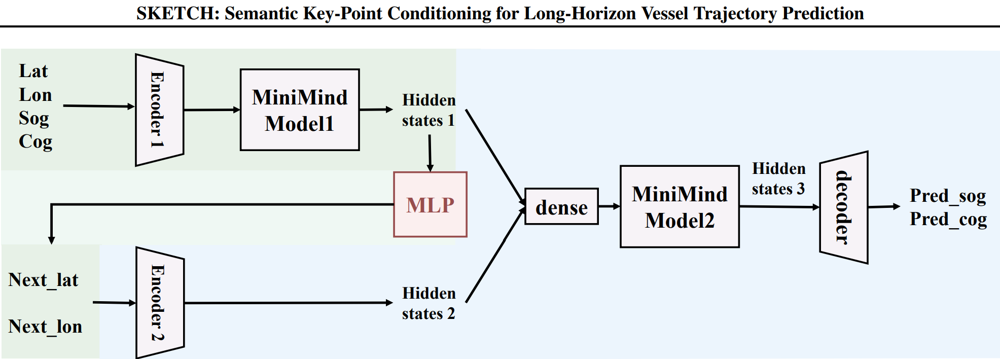

SKETCH: Semantic Key-Point Conditioning for Long-Horizon Vessel Trajectory Prediction
International Conference on Machine Learning (ICML), 2026
A decoder-only Transformer conditioned on a Next Key Point, the next port or strait a vessel is heading toward, which separates long-horizon intent from local motion in 48-hour container-ship trajectory prediction.
My role: co-proposed Next Key Point conditioning, introduced the velocity parameterization that made training stable, and built the training and evaluation pipeline.
@InProceedings{pmlr-v306-gan26b,
title = {{SKETCH}: Semantic Key-Point Conditioning for
Long-Horizon Vessel Trajectory Prediction},
author = {Gan, Linyong and Li, Zimo and Xu, Wenxin and Li, Xingjian
and Huang, Jianhua Z. and Tu, Enmei and Chen, Shuhang},
booktitle = {Proceedings of the 43rd International Conference on Machine Learning},
pages = {32860--32875},
year = {2026},
volume = {306},
series = {Proceedings of Machine Learning Research},
publisher = {PMLR},
url = {https://proceedings.mlr.press/v306/gan26b.html}
}